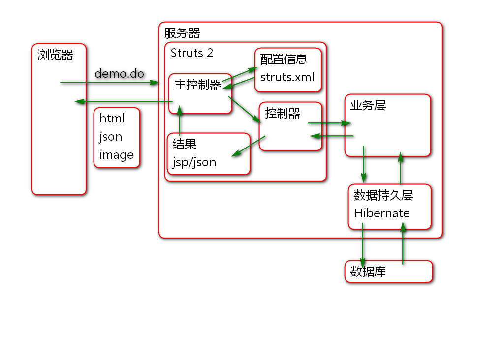
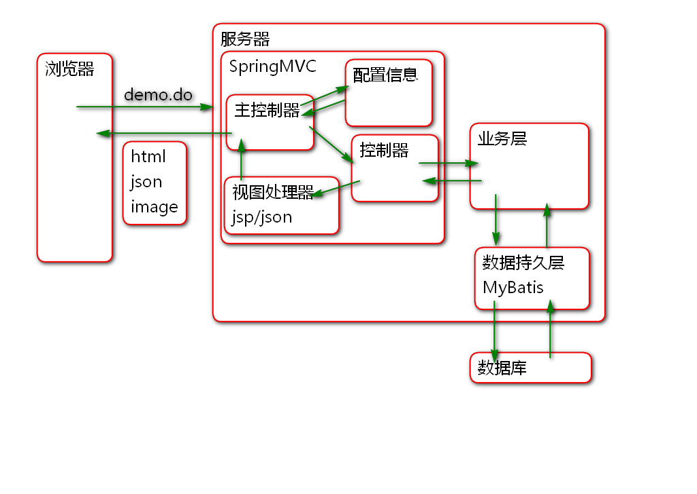
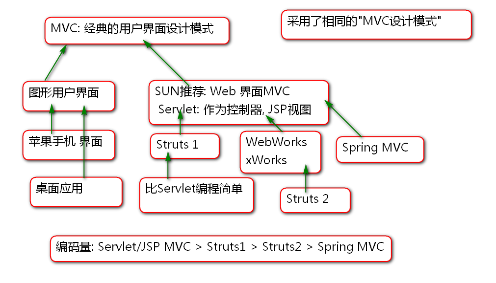
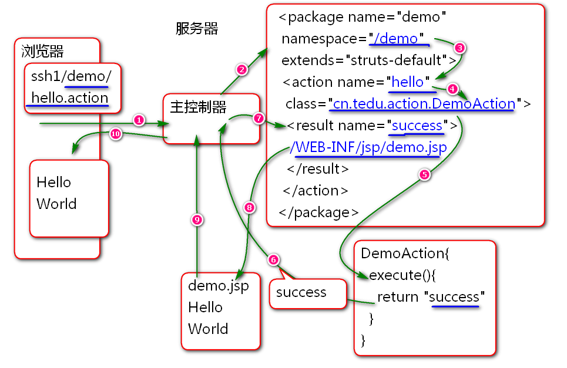
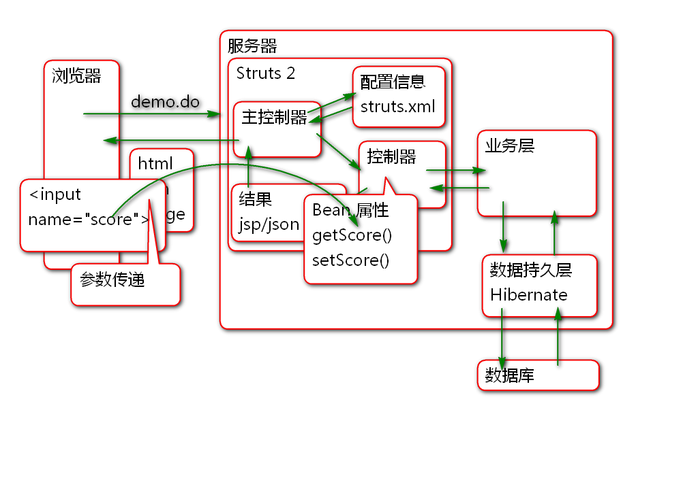
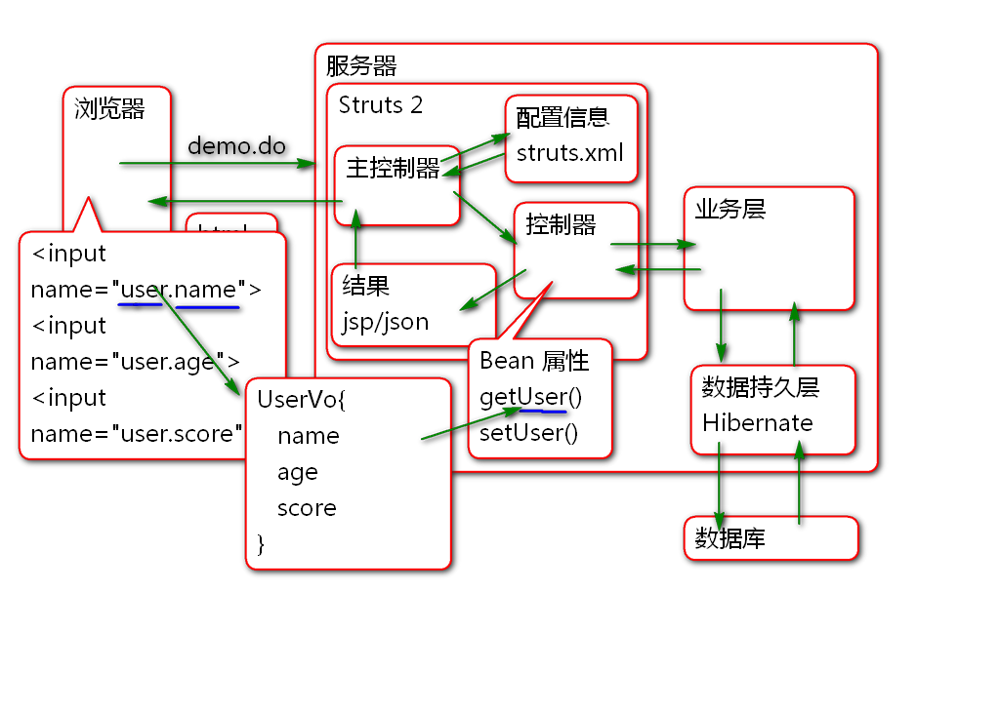
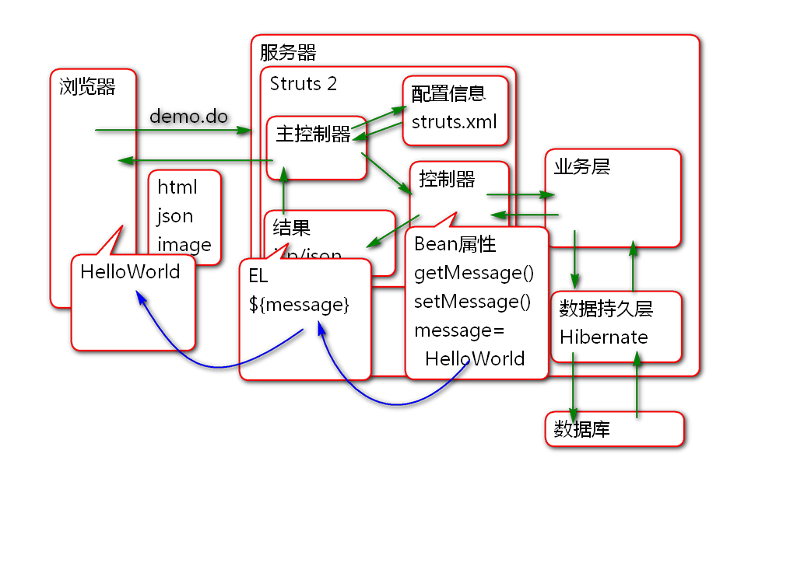
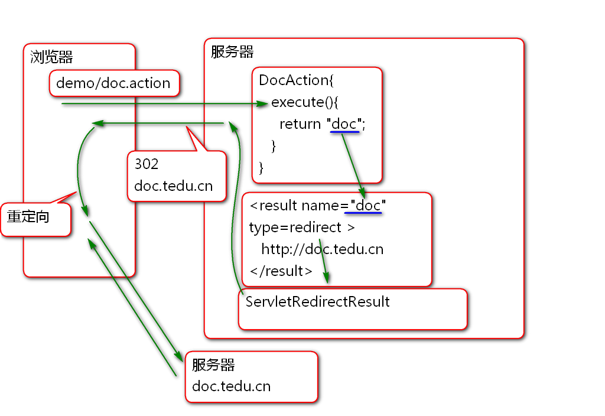
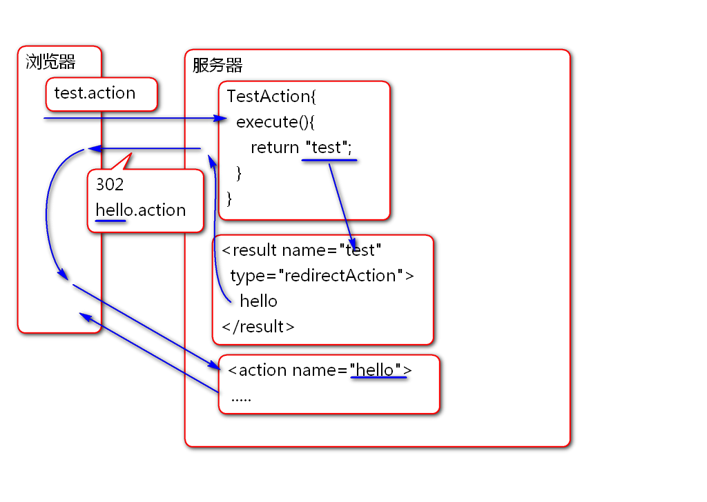
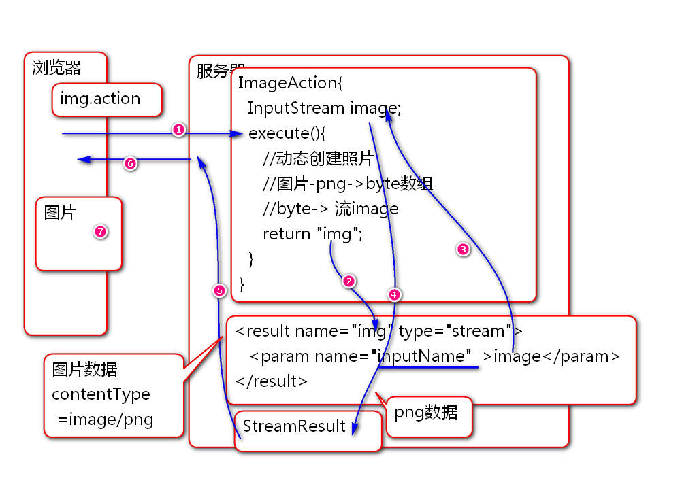

Spring + Struts 2 + Hibernate = SSH

Spring + Spring MVC + MyBatis = SSM

Struts1 和 Struts2 没有任何关系.
Struts2 前身是 WebWorks 采用MVC设计模式的WEB应用框架.

步骤:

导包 pom.xml
<!-- Struts 2 核心包 -->
<dependency>
<groupId>org.apache.struts</groupId>
<artifactId>struts2-core</artifactId>
<version>2.5.12</version>
</dependency>
配置
配置主控制器 web.xml
<filter>
<display-name>StrutsPrepareAndExecuteFilter</display-name>
<filter-name>StrutsPrepareAndExecuteFilter</filter-name>
<filter-class>org.apache.struts2.dispatcher.filter.StrutsPrepareAndExecuteFilter</filter-class>
</filter>
<filter-mapping>
<filter-name>StrutsPrepareAndExecuteFilter</filter-name>
<url-pattern>/*</url-pattern>
</filter-mapping>
添加配置文件struts.xml
<?xml version="1.0" encoding="UTF-8"?>
<!DOCTYPE struts PUBLIC
"-//Apache Software Foundation//DTD Struts Configuration 2.5//EN"
"http://struts.apache.org/dtds/struts-2.5.dtd">
<struts>
</struts>
测试
Hello World
控制器类:
/**
* Struts2 的控制器类
* 就是普通Java类
*/
public class DemoAction {
/**
* 控制器中的 流程控制方法 一般是execute方法
* 返回值 success 代表JSP页面的名称
*/
public String execute(){
System.out.println("Hello World!");
return "success";
}
}
编写JSP文件: demo.jsp
<%@ page contentType="text/html; charset=utf-8"
pageEncoding="UTF-8"%>
<!DOCTYPE html>
<html>
<head>
<meta charset="UTF-8">
<title>DEMO</title>
</head>
<body>
<!-- /WEB-INF/jsp/demo.jsp -->
<h1>Hello World!</h1>
</body>
</html>
配置struts.xml
<!-- name 属性就是一个标识,写啥都行,不能重复 -->
<!-- namespace 用于声明第一层请求web路径
http://localhost:8080/ssh1/demo -->
<!-- extends 用于继承Struts2的默认配置 -->
<package name="demo"
namespace="/demo"
extends="struts-default">
<!-- action 中的name是第二层
http://localhost:8080/ssh1/demo/hello.action -->
<!-- 请求 /demo/hello.action时候执行
DemoAction类中的控制方法 execute -->
<action name="hello"
class="cn.tedu.action.DemoAction">
<!-- 当控制方法返回success时候
转发到 demo.jsp -->
<result name="success">
/WEB-INF/jsp/demo.jsp
</result>
</action>
</package>
部署测试.
http://localhost:8080/ssh1/demo/user.action
原理:

步骤:
编写demo.html
<!DOCTYPE html>
<html>
<head>
<meta charset="UTF-8">
<title>从浏览器到控制器传输参数</title>
</head>
<body>
<h1>从浏览器到控制器传输参数</h1>
<form action="demo/param.action"
method="post">
<input type="text" name="score"><br>
<input type="text" name="user"><br>
<input type="submit" value="保存">
</form>
</body>
</html>
编写控制器
public class ParamAction {
private Integer score;
private String user;
public Integer getScore() {
return score;
}
public void setScore(Integer score) {
this.score = score;
}
public String getUser() {
return user;
}
public void setUser(String user) {
this.user = user;
}
/**
* 流程控制器方法
* Struts2 会在执行控制器方法之前调用
* getXXX, setXXX 注入用户提交的参数!
*/
public String execute(){
//展示从浏览器接收到参数
System.out.println("score:"+score);
System.out.println("user:"+user);
return "success";
}
}
配置 struts.xml
<!-- 浏览器到控制器传递参数 -->
<action name="param"
class="cn.tedu.action.ParamAction">
<result name="success">
/WEB-INF/jsp/demo.jsp
</result>
</action>
测试
原理:

案例:
编写user-demo.html
<!DOCTYPE html>
<html>
<head>
<meta charset="UTF-8">
<title>域模型封装参数</title>
</head>
<body>
<h1>域模型封装参数</h1>
<form action="demo/user.action" method="post">
姓名:<input type="text" name="user.name"><br>
年龄:<input type="text" name="user.age"><br>
分数:<input type="text" name="user.score"><br>
<input type="submit" value="提交">
</form>
</body>
</html>
编写值对象
public class UserVo {
private String name;
private Integer age;
private Integer score;
public String getName() {
return name;
}
public void setName(String name) {
this.name = name;
}
public Integer getAge() {
return age;
}
public void setAge(Integer age) {
this.age = age;
}
public Integer getScore() {
return score;
}
public void setScore(Integer score) {
this.score = score;
}
@Override
public String toString() {
return "UserVo [name=" + name + ", age=" + age + ", score=" + score + "]";
}
}
编写控制器
public class UserAction {
private UserVo user;
public void setUser(UserVo user) {
this.user = user;
}
public UserVo getUser() {
return user;
}
public String save(){
//展示接收到的数据
System.out.println(user);
return "success";
}
}
配置 struts.xml
<!-- 将表单数据打包为域模型对象传递到控制器 -->
<action name="user"
class="cn.tedu.action.UserAction"
method="save">
<result name="success">
/WEB-INF/jsp/demo.jsp
</result>
</action>
测试
Struts2 控制器的Bean属性可以在JSP中使用EL表达式访问.
原理:

案例:
编写控制器
public class MessageAction {
private String message;
public void setMessage(String message) {
this.message = message;
}
public String getMessage() {
return message;
}
public String execute(){
message = "Hello World!";
return "success";
}
}
编写JSP: message.jsp
<%@ page contentType="text/html; charset=utf-8"
pageEncoding="UTF-8"%>
<!DOCTYPE html>
<html>
<head>
<meta charset="UTF-8">
<title>DEMO</title>
</head>
<body>
<h1>展示控制器的值</h1>
<p>${ message }</p>
</body>
</html>
配置 struts.xml
<!-- 将控制器中的值展示到JSP上 -->
<action name="msg"
class="cn.tedu.action.MessageAction">
<result name="success">
/WEB-INF/jsp/message.jsp
</result>
</action>
用于处理控制器的返回结果
默认情况下, 使用 extends="struts-default" 继承了, struts-default.xml 文件中声明的 result 类型.
Struts 的默认结果类型是 dispatcher, 最终利用 ServletDispatcherResult 类进行结果的处理.
原理:

案例:
控制器
public class DocAction {
public String execute(){
System.out.println("DocAction");
return "doc";
}
}
配置: struts.xml
<!-- 重定向结果类型 -->
<action name="doc"
class="cn.tedu.action.DocAction">
<result name="doc" type="redirect">
http://doc.tedu.cn
</result>
</action>
测试
原理:

案例:
控制器
public class TestAction {
public String execute(){
System.out.println("TestAction");
return "test";
}
}
配置文件 struts.xml
<!-- 重定向到其他控制器 -->
<action name="test"
class="cn.tedu.action.TestAction">
<result name="test"
type="redirectAction">
hello
</result>
</action>
测试
原理:

步骤:
控制器
public class ImageAction {
private InputStream image;
public InputStream getImage() {
return image;
}
public void setImage(InputStream image) {
this.image = image;
}
public String execute(){
//生成图片...
try {
byte[] data = createPngImage();
image = new ByteArrayInputStream(data);
return "img";
} catch (IOException e) {
e.printStackTrace();
return "error";
}
}
public byte[] createPngImage() throws IOException{
//创建 BufferedImage对象
BufferedImage img = new BufferedImage(
200, 100, BufferedImage.TYPE_3BYTE_BGR);
img.setRGB(0, 0, 0xff0000);
img.setRGB(100, 50, 0xffff00);
//利用API将图片对象编码为 png
//酱油瓶子out(变长byte数组)
ByteArrayOutputStream out=
new ByteArrayOutputStream();
ImageIO.write(img, "png", out);
//再获取PNG数据数组
out.close();
//从酱油瓶子中倒出数据(byte[])
byte[] data = out.toByteArray();
return data;
}
}
错误页面: /WEB-INF/jsp/error.jsp
<%@ page contentType="text/html; charset=utf-8"
pageEncoding="UTF-8"%>
<!DOCTYPE html>
<html>
<head>
<meta charset="UTF-8">
<title>DEMO</title>
</head>
<body>
<!-- /WEB-INF/jsp/demo.jsp -->
<h1>错误了!</h1>
</body>
</html>
配置:
<!-- 利用Stream Result 动态下载图片 -->
<action name="img"
class="cn.tedu.action.ImageAction">
<result name="img" type="stream">
<param name="inputName">
image
</param>
<param name="contentType">
image/png
</param>
</result>
<result name="error">
/WEB-INF/jsp/error.jsp
</result>
</action>
测试
作业
熟练创建项目配置Struts2环境
开发课堂全部案例